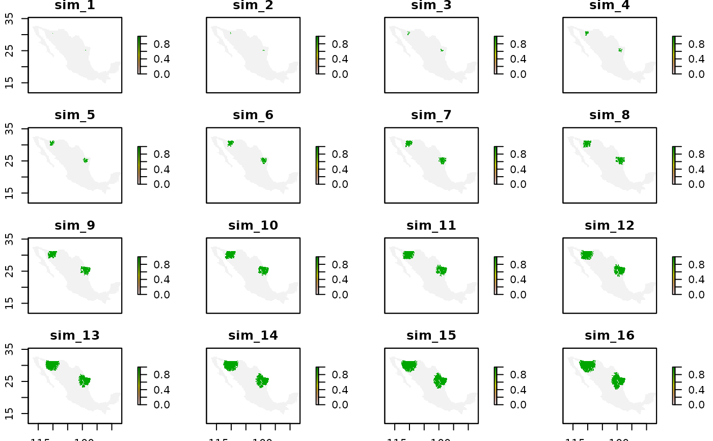

sdm_sim: Simulate single species dispersal dynamics using the BAM framework.
Source:R/sdm_sim.R
sdm_sim.Rdsdm_sim: Simulate single species dispersal dynamics using the BAM framework.
Usage
sdm_sim(
set_A,
set_M,
sp_interaction_model = NULL,
initial_points,
nsteps,
stochastic_dispersal = TRUE,
disp_prop2_suitability = TRUE,
disper_prop = 0.5,
progress_bar = TRUE,
rcpp = TRUE
)Arguments
- set_A
A setA object returned by the function
model2sparse- set_M
A setM object containing the adjacency matrix of the study area. See
adj_mat- sp_interaction_model
A RasterLayer representing a suitability model of a species positive interaction. See details
- initial_points
A sparse vector returned by the function
occs2sparse- nsteps
Number of steps to run the simulation
- stochastic_dispersal
Logical. If dispersal depends on a probability of visiting neighbor cells (Moore neighborhood).
- disp_prop2_suitability
Logical. If probability of dispersal is proportional to the suitability of reachable cells. The proportional value must be declared in the parameter `disper_prop`.
- disper_prop
Probability of dispersal to reachable cells.
- progress_bar
Show progress bar
- rcpp
Logical. Use native C++ code to run the model.
Value
An object of class bam with simulation results.
The simulation are stored in the sdm_sim slot (a list of sparse matrices).
Details
The model is cellular automata where the occupied area of a species at time \(t+1\) is estimated by the multiplication of two binary matrices: one matrix represents movements (M), another abiotic -niche- tolerances (A) (Soberon and Osorio-Olvera, 2022). $$\mathbf{G}_j(t+1) =\mathbf{A}_j(t)\mathbf{M}_j \mathbf{G}_j(t)$$ The equation describes a very simple process: To find the occupied patches in \(t+1\) start with those occupied at time \(t\) denoted by \(\mathbf{G}_j(t)\), allow the individuals to disperse among adjacent patches, as defined by \(\mathbf{M}_j\), then remove individuals from patches that are unsuitable, as defined by \(\mathbf{A}_j(t)\).
The stochastic model uses a suitability values to model dispersal probabilities. These suitability values can be either obtained from the continues model stored in the set_A object or from the sp_interaction_model (RasterLayer). If the parameter rcpp is set to TRUE the model will be run using native C++ code through Rcpp and RcppArmadillo packages.
References
Soberón J, Osorio-Olvera L (2023). “A dynamic theory of the area of distribution.” Journal of Biogeography6, 50, 1037-1048. doi:10.1111/jbi.14587 , https://onlinelibrary.wiley.com/doi/abs/10.1111/jbi.14587. .
Examples
# \donttest{
model_path <- system.file("extdata/Lepus_californicus_cont.tif",
package = "bamm")
model <- raster::raster(model_path)
sparse_mod <- bamm::model2sparse(model,threshold=0.05)
adj_mod <- bamm::adj_mat(sparse_mod,ngbs=1)
occs_lep_cal <- data.frame(longitude = c(-110.08880,
-98.89638),
latitude = c(30.43455,
25.19919))
occs_sparse <- bamm::occs2sparse(modelsparse = sparse_mod,
occs = occs_lep_cal)
sdm_lep_cal <- bamm::sdm_sim(set_A = sparse_mod,
set_M = adj_mod,
initial_points = occs_sparse,
nsteps = 100,
stochastic_dispersal = TRUE,
disp_prop2_suitability=FALSE,
disper_prop=0.5,
progress_bar=TRUE)
#> Simulation progress:
#> 0% 10 20 30 40 50 60 70 80 90 100%
#> [ ]
[
[> ] 1%
[=> ] 3%
[==> ] 5%
[===> ] 7%
[====> ] 9%
[=====> ] 11%
[======> ] 13%
[=======> ] 15%
[========> ] 17%
[=========> ] 19%
[==========> ] 21%
[===========> ] 23%
[============> ] 25%
[=============> ] 27%
[==============> ] 29%
[===============> ] 31%
[================> ] 33%
[=================> ] 35%
[==================> ] 37%
[===================> ] 39%
[====================> ] 41%
[=====================> ] 43%
[======================> ] 45%
[=======================> ] 47%
[========================> ] 49%
[=========================> ] 51%
[==========================> ] 53%
[===========================> ] 55%
[============================> ] 57%
[=============================> ] 59%
[==============================> ] 61%
[===============================> ] 63%
[================================> ] 65%
[=================================> ] 67%
[==================================> ] 69%
[===================================> ] 71%
[====================================> ] 73%
[=====================================> ] 75%
[======================================> ] 77%
[=======================================> ] 79%
[========================================> ] 81%
[=========================================> ] 83%
[==========================================> ] 85%
[===========================================> ] 87%
[============================================> ] 89%
[=============================================> ] 91%
[==============================================> ] 93%
[===============================================> ] 95%
[================================================> ] 97%
[=================================================>] 99%
[==================================================] 100%
sim_res <- bamm::sim2Raster(sdm_lep_cal)
raster::plot(sim_res)

# }